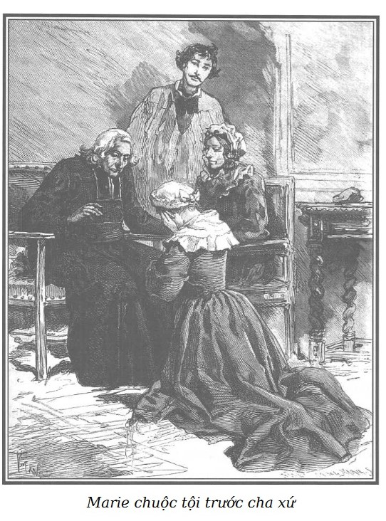

Marie, nhờ sự chăm sóc của bà Georges đã thay đổi hẳn, khó nhận ra được nữa.
Một cái mũ trùm đầu hình tròn, kiểu nông thôn và mái tóc dày hoe vàng ôm lấy nét mặt trinh nữ của cô. Một cái khăn quàng bằng lụa trắng bắt tréo trên ngực và lấp đi một nửa dưới mảnh yếm vuông của chiếc tạp dề bằng lụa trơn phản ánh màu xanh, màu hồng, lấp lánh trên nền sẫm của chiếc váy màu nâu nhạt hình như được may sẵn cho Marie. Nét mặt trầm lặng sâu xa, hạnh phúc bất ngờ đã đưa tâm hồn cô vào một nỗi buồn khó tả, vào nỗi u sầu chính đáng.
Rodolphe không ngạc nhiên về dáng vẻ trang nghiêm của Marie, ông trông chờ như vậy.
Bằng sự tế nhị tuyệt vời, ông không thốt một lời khen về sắc đẹp của cô tuy sắc đẹp ấy thật rạng rỡ và thanh khiết. Rodolphe cảm thấy có gì đó vừa long trọng vừa trang nghiêm trong tâm hồn cô gái vừa mới được cứu khỏi sự sa ngã.
Bà Georges lại có vẻ nghiêm nghị và nhẫn nhục, dấu tích của một chuỗi dài đau khổ, một nỗi u buồn sâu xa. Bà xử sự với Marie khoan dung, như một người mẹ đối với đứa con của mình, một phần cũng vì nét nhu mì duyên dáng của cô gái đến là đáng mến.
– Con tôi đây này, cháu nó muốn cảm ơn những nghĩa cử của ông, thưa ông Rodolphe. – Bà Georges nói như muốn giới thiệu Marie với Rodolphe.
Mấy tiếng “con tôi” đã khiến Marie quay lại, mắt mở to nhìn người cưu mang mình với một tình cảm biết ơn khó tả.
– Vì Marie, tôi cảm ơn bà, bà Georges thân mến, cháu xứng đáng được chăm sóc thắm thiết như thế và sẽ luôn luôn xứng đáng như thế.
– Thưa ông Rodolphe, – Marie run run nói – ông biết cho… Thật tình là cháu không tìm được lời để nói với ông.
– Sự cảm động của cháu đã nói hết với ta, Marie ạ!
– Ôi! Cháu nó cảm nhận rõ biết bao hạnh phúc đã đến với mình như có phép màu. – Bà Georges mủi lòng nói. – Cử chỉ đầu tiên của cháu nó khi vào phòng tôi là quỳ xuống dưới chân tượng Chúa chịu nạn.
– Chỉ đến bây giờ… Nhờ ông, thưa ông Rodolphe, cháu mới dám cầu nguyện. – Marie nhìn Rodolphe, nói.
Murph quay ngoắt đi. Cái kiểu phớt đời Ăng-lê, lòng tự tôn của một nhà quý tộc không cho phép ông để lộ mình đã cảm động như thế nào trước những lời đơn giản của Marie.
– Cháu ơi! – Rodolphe bảo Marie. – Ta có chuyện muốn nói với bà Georges. Ông bạn Murph sẽ đưa cháu đi xem trại và cháu sẽ làm quen với những người sẽ trông nom cháu. Chốc nữa chúng ta sẽ gặp cháu… Này, Murph, Murph, ông không nghe tôi nói ư?
Con người quý tộc này đang quay lưng lại, làm như hỉ mũi ầm ĩ, bỏ khăn tay vào túi, chụp sâu chiếc mũ xuống tận mắt, nghiêng mình quay lại đưa tay cho Marie.
Cử chỉ của Murph rất khéo léo nên Rodolphe cũng như bà Georges không nhìn thấy nét mặt ông. Khoác tay cô gái, ông đi nhanh về phía các nhà trong trại, đi nhanh đến nỗi muốn theo kịp thì Marie phải chạy, gần giống như hồi nhỏ phải chạy theo mụ Vọ.
– Bà Georges, bà nghĩ thế nào về Marie? – Rodolphe hỏi.
– Thưa ông Rodolphe, tôi đã nói với ông về cháu rồi. Vừa kịp bước chân vào phòng tôi, nhìn thấy tượng Chúa, cháu đã chạy đến quỳ xuống. Tôi không thể diễn tả nổi với ông tất cả sự bột phát và kính cẩn tự nhiên trong cử chỉ đó. Tôi hiểu là cháu không hề bị mất nhân phẩm. Và, thưa ông, lòng biết ơn của cháu đối với ông không có gì quá đáng, không có chút nào cường điệu và như thế lại càng thành thực hơn. Còn một điều nữa để ông thấy được đức tin mãnh liệt trong cháu. Tôi đã bảo cháu: “Chắc cháu ngạc nhiên, vui sướng khi ông Rodolphe nói từ nay cháu sẽ ở lại đây, chắc cháu cảm động lắm khi nghe nói như vậy.” Ôi! Vâng, cháu trả lời tôi: “Khi ông Rodolphe nói với cháu như thế, ngay tức khắc cháu thấy như có cái gì diễn biến trong cháu, cháu cảm nhận một niềm hạnh phúc thiêng liêng, sự kính trọng thiêng thiêng như khi cháu bước chân vào giáo đường; khi cháu được vào đó, bà biết cho, thưa bà…” Tôi không để cháu nói thêm, vì thấy cháu có ý xấu hổ. “Ta biết, con ạ, và ta sẽ luôn luôn gọi con là con nếu cháu thích như thế. Ta biết cháu đã đau khổ nhiều nhưng Chúa sẽ ban phúc lành cho người nào kính Chúa và sợ Chúa, những ai khốn khó và những ai biết ăn năn.”
– Đúng, bà Georges tốt bụng ạ, tôi thấy hài lòng gấp bội về việc làm của mình. Cháu bé tội nghiệp đó sẽ chẳng phụ lòng bà chăm sóc. Bà chỉ cần gieo mầm để gặt hái, bà đã đoán đúng năng khiếu của cháu; thật tuyệt vời.
– Còn một điều khiến tôi xúc động nữa, ông Rodolphe ạ, là cháu không hề dám mảy may hỏi về ông, mặc dù ý muốn hiểu biết hơn về ông kích thích cháu rất nhiều. Nhận thấy sự dè dặt tế nhị đó, tôi muốn xem cháu có ý thức gì về việc đó không, tôi hỏi: “Chắc cháu rất muốn biết thêm về người đã bí mật làm ơn cho cháu là ai nhỉ?” Cháu trả lời tôi thơ ngây và đáng yêu: “Dạ thưa, ông ấy tên là Ân Nhân của cháu.”
– Bà sẽ yêu cháu chứ? Bà thân mến, sống chung với cháu thì bà sẽ hiểu lắm. Ít ra cháu cũng sẽ chiếm được lòng bà…
– Vâng, tôi sẽ chăm sóc cháu cũng như tôi chăm sóc nó. – Bà Georges nói, giọng đau đớn như xé ruột.
Rodolphe cầm tay bà.
– Thôi bà! Thôi bà! Bà đừng nản lòng vội, nếu công cuộc tìm kiếm mà tôi làm chưa có kết quả thì có thể một ngày kia…
Bà Georges lắc đầu buồn rầu và chép miệng.
– Thằng con tội nghiệp của tôi bây giờ có khi đã hai mươi tuổi!
– Thì nó đã đến tuổi ấy mà!
– Chúa lắng nghe lời ông nguyện và Người sẽ chấp nhận ước nguyện của ông, thưa ông Rodolphe.
– Chúa sẽ chấp nhận lời tôi nguyện, tôi hy vọng thế… Hôm qua tôi đã đi, nhưng không có kết quả, tìm một tên vô lại có biệt danh kỳ khôi là Cánh Tay Đỏ, tên này có thể như tin đồn, cho biết tin tức về con trai bà. Khi định xuống nhà Cánh Tay Đỏ, sau một cuộc ẩu đả, tôi đã gặp cháu gái đáng thương này.
– Ôi chà! Cũng tốt thôi, ít ra thì quyết tâm đầy thiện chí của ông cũng đã dẫn lối cho ông gặp cháu gái bất hạnh này, thưa ông Rodolphe.
– Hơn thế nữa, đã lâu, từ ngày ấy, tôi muốn tìm hiểu về các tầng lớp người khốn khổ. Tôi gần như tin chắc rằng trong đó có thể có những linh hồn cần được cứu thoát khỏi quỷ Satan mà nhiều lần tôi đã thử ngăn cản và thi thoảng còn phỗng tay trên bọn ác quỷ những món bở nhất là đằng khác.
Rodolphe mỉm cười và nói tiếp nghiêm trang hơn:
– Bà có tin tức gì từ Rochefort không?
Bà Georges rùng mình nói khẽ:
– Không hề có ông ạ.
– Càng hay, con quỷ dữ đó có thể đã toi mạng trong các bãi bùn khi tìm cách vượt ngục. Dấu hiệu nhận dạng của lão được thông báo khá rộng; một tên trọng phạm đáng sợ, người ta đã lùng sục khắp nơi để phát hiện ra lão; và lão đã vượt ngục khoảng sáu tháng nay. – Rodolphe dừng lại khi nói tiếng ghê sợ đó.
– Vượt ngục! Ôi! Ông cứ nói đi, nhà tù trọng án! – Người đàn bà đáng thương nói lạc cả giọng. – Cha của con trai tôi! Ôi! Nếu đứa con tội nghiệp còn sống, nếu cũng như tôi, nó không đổi tên, thật nhục nhã, thật nhục nhã! Và như thế cũng chưa đáng kể, cha nó có thể đã giữ lời nguyền ghê gớm. Trời! Ông Rodolphe, ông tha lỗi cho tôi; tuy ông đã giúp đỡ nhiều, tôi vẫn còn rất đau khổ.
– Tội nghiệp bà, bà hãy trấn tĩnh lại.
– Đôi khi nhiều nỗi lo sợ ghê gớm xâm chiếm tôi. Tôi cứ hình dung chồng tôi vượt ngục Rochefort an toàn và tìm giết tôi như có thể đã giết con tôi.
– Tóm lại lão đã làm gì cháu? Lão đã có gan làm chưa?
– Điều bí mật đó tôi đành chịu, không biết được.
Rodolphe tư lự:
– Vì cớ gì mà tên khốn nạn đó đã bắt cóc con bà cách đây mười lăm năm, bà nói với tôi rằng lão định âm mưu trốn ra nước ngoài ư? Một đứa trẻ ở độ tuổi đó sẽ làm vướng chân lão khi chạy trốn.
– Tai hại thay! Thưa ông Rodolphe, khi chồng tôi – người đàn bà khốn khổ rùng mình khi nói từ này – bị giữ lại biên giới, bị giải về Paris và bị ném vào nhà tù nơi người ta cho phép tôi vào thăm, lão đã chẳng nói với tôi những lời khủng khiếp thế này sao: “Tao đem con mày đi vì mày yêu nó và đó là cách bắt mày phải gửi tiền cho tao, còn thằng bé, nó được hưởng hay không, đó là việc của tao. Nó sống hay chết, tao không thiết, nhưng nếu nó sống thì nó sẽ được ở với những cao thủ; mày sẽ phải nuốt tủi nhục vì con cũng như chồng bị tù chung thân.” Than ôi! Một tháng sau, chồng tôi bị xử tù chung thân. Từ ngày đó mọi lá thư khẩn khoản cầu xin đều không có kết quả, tôi không hề được biết tí nào về số phận của con tôi. Chao ôi! Ông Rodolphe ơi! Con tôi giờ ở đâu? Những lời nói đáng sợ luôn luôn ám ảnh tôi: “Mày sẽ nuốt tủi nhục vì con cũng như đã tủi nhục vì chồng.”
– Một tội ác tàn nhẫn không sao hiểu nổi. Tại sao lão lại muốn làm sa đọa, làm hư hỏng đứa bé tội nghiệp ấy? Sao lại bắt cóc con bà?
– Tôi đã nói với ông, để buộc tôi phải gửi tiền cho lão; tuy lão đã khiến tôi khánh kiệt, tôi vẫn còn chút ít vốn liếng cuối cùng, thế rồi cũng tiêu tan hết. Mặc dù lão gian ác thế, tôi cũng không thể nào tin được là lão không dùng ít nhất một phần số tiền đó để gửi nuôi đứa con tội nghiệp của tôi.
– Thế con trai bà không có dấu vết gì để nhận ra được nó sao?
– Không có gì khác ngoài cái mà tôi đã nói với ông, bức tượng thánh rất nhỏ khắc vào đá lam ngọc đeo ở cổ nó bằng một sợi dây bạc. Kỷ vật đó được Đức Giáo hoàng ban phúc lành, mẹ tôi đeo nó từ thuở còn rất nhỏ và rất thành kính. Đến lượt tôi. Than ôi! Cái bùa thần diệu đó đã mất hết linh nghiệm.
– Biết đâu đấy! Rõ cái này! Chúa rất nhiều quyền lực.
– Thượng đế chẳng đã đưa tôi đến gặp ông sao, thưa ông Rodolphe!
– Hơi muộn, bà Georges thân mến ạ. Nếu không tôi đã có thể giúp đỡ bà tránh được bao năm dài buồn tủi.
– Ôi! Thưa ông Rodolphe, ông đã chẳng bù đắp cho tôi nhiều rồi sao?
– Bù đắp gì cơ? Tôi mua trang trại này. Vào thời kỳ sung sức, bà đã khẳng định giá trị của mình; bà đồng ý làm quản lý cho tôi; nhờ sự chăm lo tuyệt vời, những hoạt động thông minh của bà, cơ ngơi này đã sinh lời cho tôi…
– Sinh lời cho ông, thưa ông, – bà Georges ngắt lời Rodolphe – chẳng phải chính tôi đã đem số tiền lợi tức đưa cho linh mục Laporte yêu quý của chúng ta, và số tiền đó theo lệnh ông đã được linh mục đem ra bố thí hay sao?
– Vậy thì đó không phải là sự sinh lời tốt à? Nhưng bà đã báo tin cho ông linh mục thân mến biết tôi đến đây rồi chứ? Tôi định ủy thác cô bé mà tôi bảo trợ cho linh mục. Cha đã nhận được thư rồi chứ?
– Ông Murph ngay khi đến đây đã đưa thư cho ông linh mục rồi.
– Trong thư, tôi chỉ nói vắn tắt với cha về chuyện cô bé tội nghiệp. Chẳng là tôi không chắc có đến được đây hôm nay không, trong trường hợp đó Murph sẽ đưa Marie đến đây cho bà.
Một người làm vườn đến làm ngừng câu chuyện.
– Thưa bà, cha xứ đang đợi bà.
– Những con ngựa trạm đã đến chưa, chàng trai? – Rodolphe hỏi.
– Dạ thưa, rồi ạ, thưa ông Rodolphe, người ta đã thắng ngựa xong xuôi. – Người làm vườn đi ra.
Bà Georges, ông linh mục và mọi người trong trại cũng chỉ biết người cưu mang Marie dưới cái tên Rodolphe, Murph kín như bưng, chỉ khi một mình với Rodolphe, ông mới cố ý giữ lễ xưng hô “Đức ông” với Rodolphe, nhưng trước người lạ không bao giờ ông gọi tên khác ngoài cái tên ông Rodolphe.
– Tôi quên không nói trước với bà, bà Georges thân mến, – Rodolphe vừa đi vào nhà vừa nói – Marie đau ngực. Sự thiếu thốn, sự cùng cực đã làm suy kiệt sức khỏe của cháu. Sáng nay, ở ngoài trời, tôi kinh ngạc nhận thấy da cháu tái nhợt mà hai má lại ửng hồng, trong hai mắt cháu tôi nhận thấy hình như cháu lên cơn sốt, cháu cần phải được chăm sóc cẩn thận.
– Ông hãy tin ở tôi, thưa ông Rodolphe. Nhưng nhờ ơn Chúa, chẳng có gì nghiêm trọng đâu. Với tuổi ấy, ở nông thôn, không khí tốt lành, được nghỉ ngơi, được sung sướng, cháu sẽ chóng bình phục.
– Tôi tin như vậy, nhưng tôi coi trọng điều này: tôi không tin những ông thầy thuốc nhà quê, tôi bảo Murph nhớ đưa đến đây một bác sĩ giỏi và ông ta sẽ quy định chế độ điều trị tốt nhất phải theo. Bà thường xuyên cho tôi biết tin về Marie nhé. Ít lâu nữa, khi cháu được nghỉ ngơi đầy đủ, đã thảnh thơi, chúng ta sẽ lo đến tương lai cho cháu. Có thể tốt hơn hết là cứ để cháu ở đây lâu dài với bà.
– Đấy chính là điều tôi mong ước. Cháu sẽ thay vào chỗ đứa con mà hàng ngày tôi luyến tiếc.
– Vậy cầu mong cho bà, cầu mong cho cháu.
Khi bà Georges và Rodolphe gần vào đến nhà, Murph và Marie cũng từ phía khác đi lại.
Marie lanh lợi thêm lên vì cuộc dạo chơi, Rodolphe lưu ý bà Georges về đôi gò má ửng hồng của cô bé rất khác biệt với màu trắng yếu ớt của da mặt.
Nhà quý tộc đáng kính buông cánh tay Marie và đến nói vào tai Rodolphe, nét mặt gần như bối rối.
– Cô bé này đã chiếm được lòng tôi. Bây giờ không biết tôi sẽ quan tâm đến ai hơn, cô bé hay bà Georges. Tôi chỉ là người vụng về thô lỗ.
– Đừng băn khoăn về chuyện đó, ông già Murph ạ. – Rodolphe vừa nói vừa siết chặt tay Murph.
Bà Georges vịn vào cánh tay Marie, cùng đi vào phòng khách nhỏ ở tầng dưới, nơi ông linh mục đang chờ.
Murph đi chuẩn bị cho một cuộc khởi hành. Chỉ còn lại Rodolphe, ông linh mục, bà Georges và Marie. Đơn giản nhưng rất đầy đủ tiện nghi, căn phòng nhỏ đó được trang trí bằng lụa Ba Tư như tất cả các phòng khác trong nhà và có đầy đủ đồ đạc đúng như Rodolphe đã tả cho Marie nghe. Một tấm thảm dày trải trên sàn, lửa cháy đỏ trong lò sưởi và hai bó hoa cúc đại đóa to đủ màu sắc cắm trong hai chiếc bình pha lê tỏa hương khắp gian phòng.
Qua những cửa chớp xanh nửa khép nửa mở, ta thấy vườn hoa, con sông nhỏ và xa xa là ngọn đồi trồng dẻ.
Linh mục Laporte ngồi cạnh lò sưởi, đã trên tám mươi tuổi; từ sau những ngày cuối cùng của Cách mạng*, ông cai quản giáo khu nghèo nàn này. Không có bộ mặt nào oai nghiêm và hiền hậu, đáng kính hơn bộ mặt già nua gầy gò và hơi có vẻ đau khổ với mớ tóc bạc viền quanh trùm xuống tận cổ áo chùng đen vá nhiều miếng. Cha thích như thế hơn và thường nói: “Dành cho vài ba đứa trẻ con nhà nghèo được mặc ấm còn hơn là diện cho bản thân.” Chiếc áo chùng đen đó đã giữ được ít nhất ba năm.
Cách mạng tư sản Pháp 1789-1799.
Ông linh mục hiền lành đó rất già, già đến nỗi tay luôn luôn run lẩy bẩy trông rất cảm động và khi cha giơ tay lên để nói, người ta tưởng như đang ban phúc.
Rodolphe đăm chiêu quan sát Marie.
Nếu ông ít biết cô hơn hoặc ít phán đoán hơn chắc ông sẽ rất ngạc nhiên khi thấy cô đến gần ông linh mục một cách thành kính và thanh thản. Năng khiếu đáng khen của Marie đã khiến cô hiểu rằng tủi nhục chấm dứt khi ăn năn và chuộc tội bắt đầu.
– Thưa cha, – Rodolphe lễ phép nói – bà Georges muốn chăm sóc cháu gái này, vì vậy con xin cha cũng rủ lòng thương cháu.
– Con có quyền như thế, con ạ, như tất cả mọi người đến với chúng ta. Lòng khoan dung của Chúa khôn cùng, con ạ. Chúa đã chứng tỏ như vậy, đã không bỏ con trong bao thử thách đớn đau. Cha biết hết rồi, – ông cầm lấy tay Marie trong hai bàn tay run run, thành kính – người hào hiệp cứu con đã thực hiện lời dạy trong Kinh thánh: “Chúa ở gần những ai cầu khẩn Người; Người thực hiện nguyện vọng của những ai biết kính sợ Người”; Chúa lắng nghe tiếng kêu cứu của họ và giải thoát cho họ. Giờ đây con hãy tỏ ra xứng đáng với ơn huệ của Người bằng đức hạnh của con, con sẽ tìm thấy ở cha, người luôn luôn khích lệ, nâng đỡ con trên con đường con đang đi. Con tìm thấy ở bà Georges tấm gương hàng ngày, ở cha lời khuyên nhủ sát sao. Công việc về sau này thì Đức Chúa cha sẽ hoàn tất.
– Và con sẽ cầu nguyện cho những người thương xót con, đã đưa con về với Chúa. – Marie nói và bất giác quỳ xuống dưới chân linh mục. Quá xúc động, cô nấc lên thành tiếng khóc nghẹn ngào.

.Bà Georges, Rodolphe và ông linh mục đều rất xúc động.
– Hãy đứng dậy, con thân yêu, – linh mục nói – con xứng đáng được giải tội ngay thôi vì con là nạn nhân hơn là có tội, như bậc tiên tri đã nói: “Chúa nâng đỡ tất cả những ai gần sa ngã, Người vực dậy tất cả những ai bị đọa đày.”
– Tạm biệt, Marie, – Rodolphe nói và đưa cô gái cây thánh giá bằng vàng đánh theo kiểu Jeannette buộc bằng một dải nhung đen – cháu giữ cây thánh giá này như một vật lưu niệm của ta; sáng nay ta vừa khắc vào đấy ngày mà cháu được giải thoát, được cứu rỗi. Ta sẽ trở lại thăm cháu.
Marie đưa cây thánh giá lên môi.
Đúng lúc đó Murph đẩy cửa phòng khách.
– Thưa ông Rodolphe, xe ngựa đã sẵn sàng.
– Tạm biệt cha, tạm biệt bà Georges yêu quý, tôi phó thác cháu cho bà đấy, một lần nữa tạm biệt Marie.
Ông linh mục đáng kính vịn vào tay bà Georges và Marie, run lẩy bẩy ra khỏi phòng, tiễn Rodolphe lên đường.
Những tia nắng cuối chiều hôm soi tỏ nhóm người vui vui và rầu rầu ấy.
Một linh mục già tượng trưng cho lòng từ thiện, lòng vị tha và ước mong vĩnh cửu.
Một phụ nữ đã nếm đủ đau thương dồn dập mà một người vợ, một người mẹ phải chịu.
Một cô gái vừa mới qua tuổi thiếu niên đã bị đẩy xuống vực sâu của tội lỗi bởi sự khốn cùng và sự ám ảnh ghê gớm của tội ác ô nhục.
Rodolphe lên xe. Murph ngồi bên. Ngựa phi nước đại.